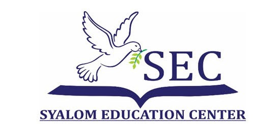
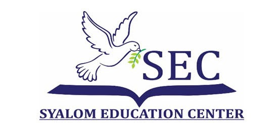
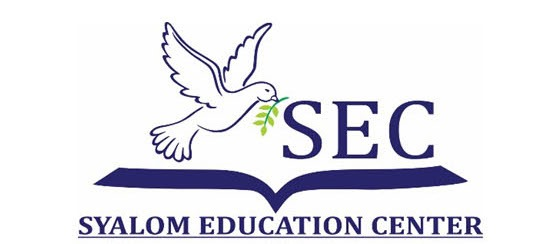
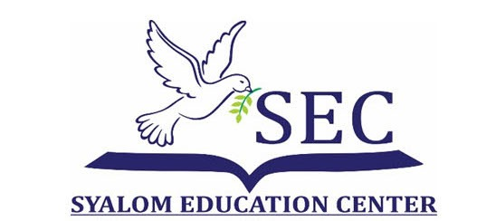

Gereja GBI Syalom yang berlokasi di Jl Kolonel Sugiono no 7 Kota Probolinggo berdiri pada tahun 1992 semakin hari semakin berkembang untuk menjangkau jiwa-jiwa yang belum mengenal Tuhan. Ibu Susan adalah istri dari Gembala GBI Syalom Bpk Andreas Soekamto Yuwono mempunyai mimpi tentang menjangkau jiwa melalui pendidikan. Di Kota Probolinggo belum ada Pendidikan Kristen. Ini merupakan kesempatan yang baik untuk mewadahi jemaat-jemaat Kristen yang ada di Kota Probolinggo agar anak-anak bisa mempunyai dasar-dasar kekristenan. Setelah beberapa lama bergumul dalam doa, dukungan dari para Hamba Tuhan tentang pendidikan Kristen yang tujuannya menjangkau jiwa akhirnya GBI Syalom membuka suatu sekolah Kristen pertama di Kota Probolinggo di jenjang PAUD yang bernama PAUD SEC (Syalom Education Center) pada tanggal 7 Juli 2011.
Seiring waktu untuk menangungi Sekolah SEC (Syalom Education Center) dibentuklah Yayasan Syalom Pobolinggo yang disahkan sesuai Akta Nomor 09 tanggal 18 Desember 2013 yang dibuat oleh Notaris Ika Handayani, SH.,M.Kn berkedudukan di Kota Probolinggo dimana lewat Yayasan Syalom Probolinggo yang menangungi sekolah SEC (Syalom Education Center) diharapkan dapat lebih menjangkau jiwa-jiwa kecil dan bisa membentuk karakter siswa yang sekolah di dalamnya.
Terwujudnya Generasi Unggul Berkarakter, Berwawasan Global dan Lingkungan yang Siap Menghadapi Tantangan Pada Masanya.

Syalom Education Center, sebuah lembaga yang didedikasikan untuk menciptakan masa depan yang lebih cerah melalui pendidikan, pelayanan sosial, dan pengembangan spiritual. Kami percaya bahwa dengan kolaborasi yang kuat dan kepemimpinan yang bijaksana, kita dapat membentuk generasi muda yang cerdas, berkarakter, dan berdaya saing.
Struktur kepengurusan di bawah ini merupakan pondasi dari upaya kami untuk menjalankan visi dan misi yayasan. Setiap bagian memiliki peran yang krusial, dengan tanggung jawab yang jelas untuk memastikan bahwa seluruh program dan kegiatan dapat berjalan dengan efektif dan memberikan dampak positif bagi masyarakat.
Pembina Yayasan adalah otoritas tertinggi dalam struktur organisasi, yang bertanggung jawab atas arahan strategis dan kebijakan yayasan. Mereka berfungsi sebagai pengawas keseluruhan untuk memastikan bahwa yayasan berjalan sesuai dengan visi dan misi yang telah ditetapkan. Dalam Syalom Education Center, Pembina Yayasan terdiri dari tiga orang, yaitu:
Pengawas bertanggung jawab untuk memantau dan menilai kinerja pengurus yayasan, memastikan bahwa semua kegiatan berjalan sesuai dengan aturan dan kebijakan yang telah ditetapkan oleh Pembina Yayasan. Pengawas dalam struktur ini terdiri dari:
Pengurus adalah pihak yang bertanggung jawab atas operasional sehari-hari yayasan. Mereka mengelola dan menjalankan program serta kegiatan yayasan, dengan koordinasi yang baik antara ketua, wakil ketua, sekretaris, dan bendahara. Pengurus Syalom Education Center terdiri dari:
Bagian Sosial berfokus pada aktivitas sosial yayasan, seperti program bantuan dan kesejahteraan untuk masyarakat. Bagian ini diketuai oleh Dr. Santoso, yang bertanggung jawab untuk merancang dan melaksanakan program-program sosial yang dapat memberikan manfaat bagi masyarakat luas.
Bagian Agama bertanggung jawab untuk kegiatan keagamaan yang dilakukan oleh yayasan, baik untuk internal maupun eksternal yayasan. Gunawan Pangestu memimpin bagian ini dengan tujuan untuk memperkuat aspek spiritual dan moral di dalam dan luar lingkungan yayasan.
Bagian Pendidikan mengelola semua aspek yang terkait dengan pendidikan di yayasan, termasuk pengembangan kurikulum, pembinaan tenaga pendidik, dan pelaksanaan program pendidikan. Hendra Wijaya memimpin bagian ini dengan tanggung jawab untuk memastikan bahwa semua program pendidikan berjalan dengan baik dan sesuai dengan standar yang telah ditetapkan.
Koordinator Sekolah di Syalom Education Center memainkan peran kunci dalam memastikan kelancaran operasional dan pelaksanaan program pendidikan di seluruh lembaga. Sebagai penghubung antara bagian pendidikan dan tenaga pendidik, koordinator sekolah bertanggung jawab untuk mengawasi implementasi kurikulum, memastikan kualitas pengajaran, dan mengelola hubungan antara siswa, guru, dan orang tua.
Dalam menjalankan tugasnya, koordinator sekolah juga berperan dalam mengidentifikasi kebutuhan pelatihan bagi tenaga pendidik, memastikan bahwa metode pengajaran yang diterapkan sesuai dengan perkembangan terkini, serta menjaga agar lingkungan belajar tetap kondusif dan sesuai dengan nilai-nilai yayasan. Selain itu, koordinator sekolah bekerja sama dengan bagian pendidikan untuk merancang program-program inovatif yang dapat meningkatkan efektivitas pembelajaran dan prestasi siswa.